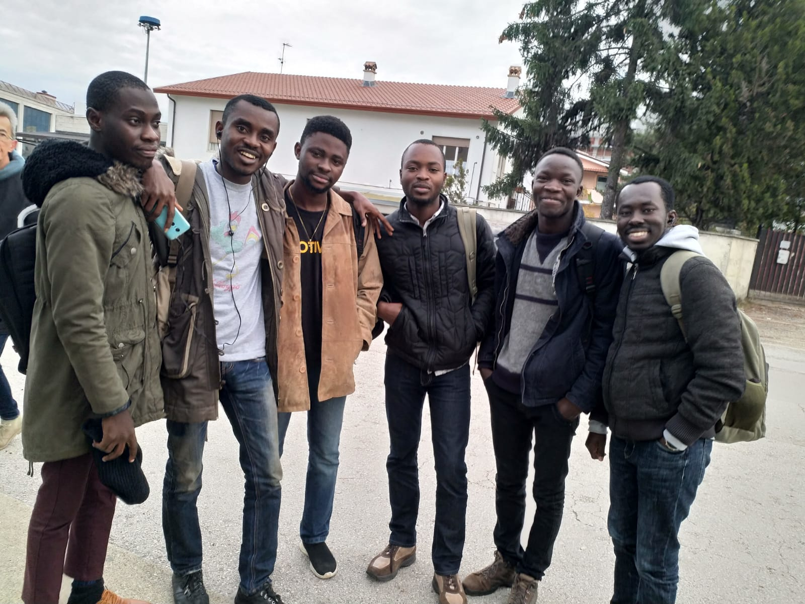
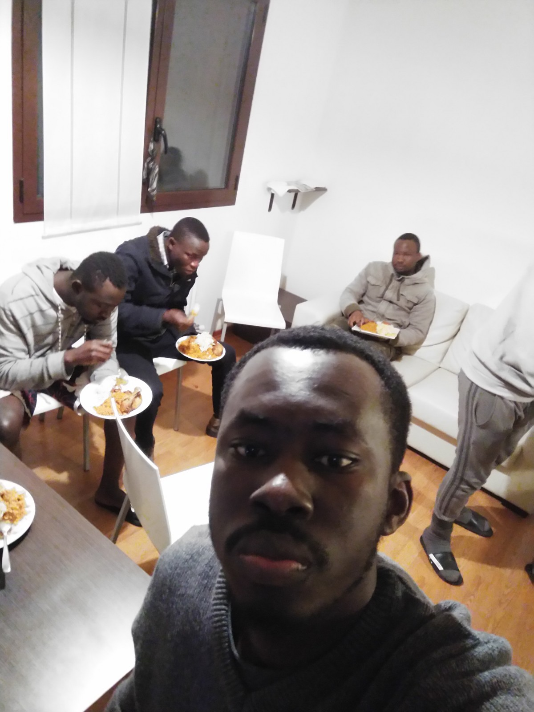
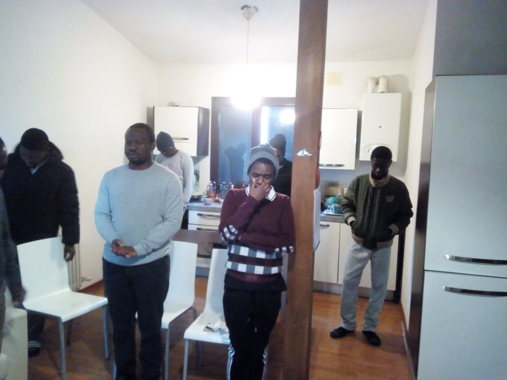

We are six Nigerians in this batch of Intermaths/Mathmods program.The journey started back then in Nigeria when we got the exciting news of the opportunity to leave the shores of our nation for a while. We rally round to get the required documents and gather funds for the journey. On getting here we were faced with other difficuties but we are overcoming.

We are Ghanians and five of us are in this batch of Intermaths/Mathmods program.The journey started back then in Nigeria when we got the exciting news of the opportunity to leave the shores of our nation for a while. We rally round to get the required documents and gather funds for the journey. On getting here we were faced with other difficuties but we are overcoming.

Apart from Nigerians and Ghanians that has a greater proportion of Africans, we come from Ethopia, Egypt, Uganda and other african countries. We joined this batch of Intermaths/Mathmods program around September 2018.The journey started back then in Nigeria when we got the exciting news of the opportunity to leave the shores of our nation for a while. We rally round to get the required documents and gather funds for the journey. On getting here we were faced with other difficuties but we are overcoming.
